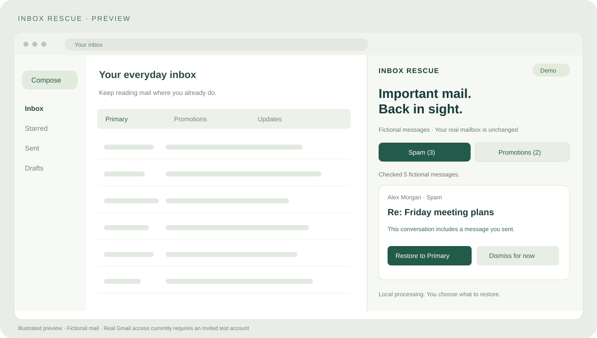

Two queues. Less noise.
Spam and Promotions stay separate. See all checked messages, or narrow the view to those with recent correspondence.
Open source. Right beside Gmail.
Give Spam and Promotions a second look. Spot familiar conversations, see why a message deserves attention, and choose what belongs in Primary.
Chrome & Edge · No Python or server setup · MIT licensed

A clearer review queue
No mystery importance score. Inbox Rescue explains recent correspondence so you can decide which messages deserve another look.
Spam and Promotions stay separate. See all checked messages, or narrow the view to those with recent correspondence.
Find addresses you contacted and conversations you joined. Prior contact is useful evidence, not a guarantee of safety.
Inspect the message in Gmail, confirm a restore to Primary, or dismiss it. Undo the label change while the results remain open.
From download to review
Download the configured ZIP from GitHub, extract it, and load it in desktop Chrome or Edge.
Read the install guide ↗Invited testers choose their account and approve Google access. Everyone else can try the fictional demo.
Your first real scan starts after authorization. Review the categories and choose each change yourself.
Built around your mailbox
The extension communicates directly with Google. We do not operate a server that receives your mail, and this version has no analytics or third-party AI processing.
Read the full privacy policy ↗Google requests broad read/manage permission. Access is temporary, and undo is limited to the current panel. Review these limits before connecting.
Before you connect
Not yet. Anyone can install and try the demo, but real Gmail access is limited to invited test accounts while Google verification is in progress. Email yexunyang7@gmail.com to ask about Preview access.
No. It checks up to 100 Spam/Promotions messages from 7 days, using up to 300 sent messages from 90 days as correspondence evidence. New senders may have no match. Review all checked messages when needed.
The Gmail permission supports reading metadata and changing message labels when you restore or undo. The scope technically permits sending, but Inbox Rescue implements no send operation. See the privacy policy for details.
Message metadata and undo actions are held in the panel. Reloading, rescanning, or clearing results can remove the undo entry. Gmail label changes already applied remain in your mailbox. Access also expires; reconnect when asked.
No. This website provides downloads, documentation, and privacy information. Gmail authorization happens through Google from the installed extension. We never ask you to enter a Gmail password on this site.
Explore the demo, share what works, and help shape a clearer inbox.